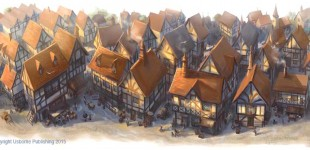
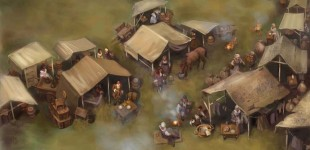

subscribe to entries
Online portfolio and blog
Home
Portfolio
Sketchbook
Bio
Contact
The Great Fire of London
The Great Fire of London – Out Now to buy!
Wren Building the New St. Paul’s Cathedral
Fighting the Fire
London 1666. Dawn of the Fire
London 1666, early morning

Pudding Lane, London
People fleeing the City
Charles II and Christopher Wren Plan new London
The Plague of 1665
Thomas Farriner’s servant, the night of the fire
The English Fleet heading to the Dutch coast
Farriner’s escaping their burning home.
Old St. Paul’s Cathedral on fire
Samuel Pepys belongings
London from the Southbank
London homes being reclaimed
London Refugees 1666

KIng Charles II Observing the Fire